Gestione anagrafica cliente
Il flusso di raccolta anagrafica cliente su Ciao! Optical condotto attraverso l'iPad ha la funzionalità aggiuntiva di poter far firmare al cliente i moduli privacy direttamente da iPad, evitandone quindi la stampa e il conseguente archivio cartaceo.
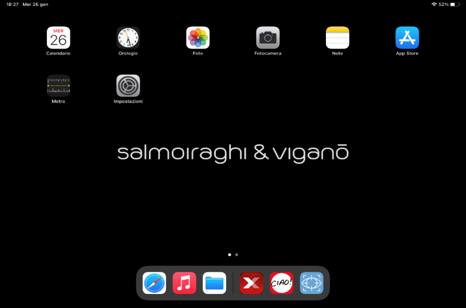
Per questo motivo si consiglia di eseguire tale processo utilizzando l'iPad. L'iPad va tenuto orizzontalmente per permettere la corretta visualizzazione della schermata di Ciao! Optical.
Per avviare Ciao! Optical da iPad, cliccare l'icona dell'app XStore rossa nel riquadro in figura (NON l'icona Ciao!)
Ricerca cliente esistente
Dopo aver eseguito l'accesso, cliccare sull'icona del lucchetto, la schermata che si apre è quella relativa alla ricerca cliente.
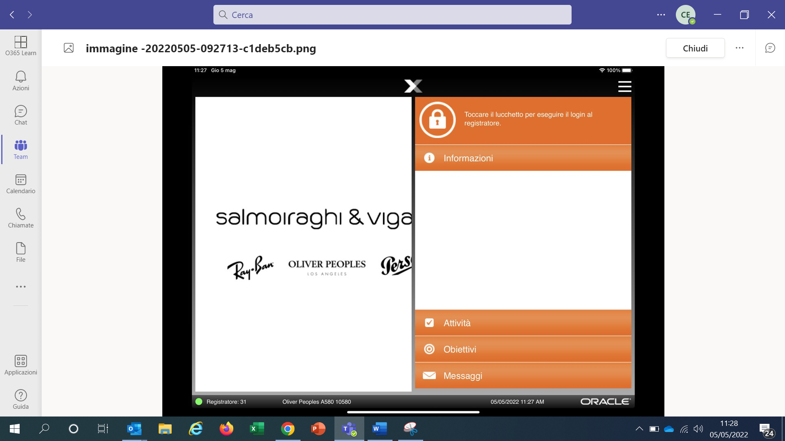
È possibile accedere a questa pagina anche cliccando sull'icona del menù in basso a sinistra e successivamente su Ricerca Cliente.
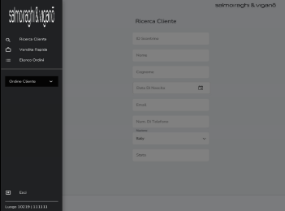
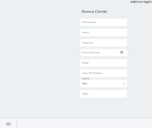
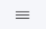
Per dare avvio alla ricerca, è necessario inserire almeno uno di questi campi:
-
ID Scontrino (barcode presente sullo scontrino fiscale scansionabile con il lettore ottico o con fotocamera iPad cliccando su Cattura ID scontrino).
-
Nome + Cognome (almeno le prime 2 lettere del cognome e la prima lettera del nome)
-
Indirizzo e-mail
-
Numero di telefono cellulare (almeno le prime 7 cifre)
Il database vendite e clienti di Ciao! è condiviso tra tutti i negozi della rete Salmoiraghi & Viganò e i Monobrand. Non è possibile visionare o ricercare vendite effettuate su negozi in franchising
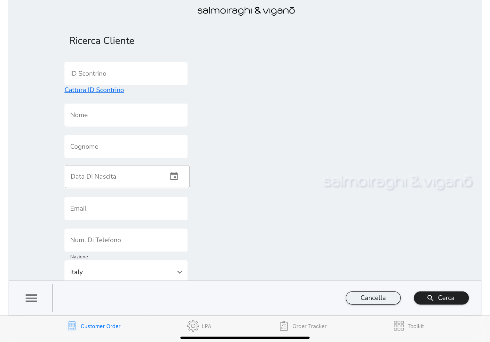
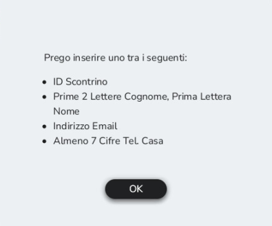
Cliccare su Cerca per visualizzare i risultati della ricerca.
Nel caso in cui le informazioni inserite non fossero sufficienti ad avviare la ricerca, compare un messaggio d'errore invitando a compilare i campi con almeno uno dei dati di cui sopra.
Cliccare su Cancella per cancellare tutte le informazioni inserite e avviare una nuova ricerca. I risultati della ricerca vengono mostrati con il dettaglio del nome, cognome, e-mail e numero di telefono cellulare.
Sulla sinistra è possibile aggiungere ulteriori criteri di ricerca (questa attività è utile per restringere il campo nel caso in cui la ricerca abbia restituito molti risultati).
Nel caso in cui fosse necessario visualizzare più informazioni è possibile espandere i risultati della ricerca cliccando sui 3 puntini azzurri sulla destra per vedere codice postale e data di nascita del cliente.
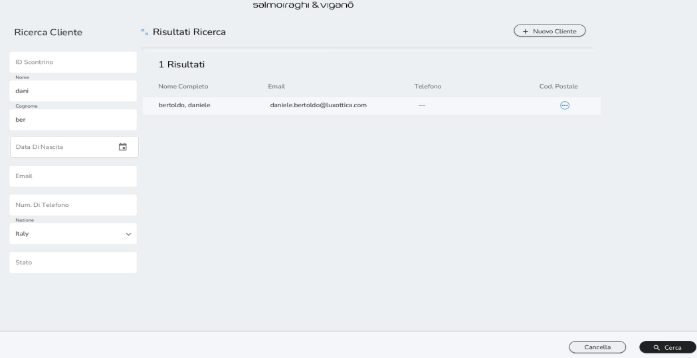
Cliccare sull' icona + per duplicare l'anagrafica. Questo passaggio è utile nel caso in cui si volesse creare l'anagrafica di persone appartenenti allo stesso nucleo familiare partendo dall'anagrafica già esistente di uno di essi. Sarà infatti più veloce creare l'anagrafica cambiando solo i dati non comuni (dati comuni possono essere, ad esempio, la residenza ed il cognome).
Per i passaggi necessari per la creazione di un nuovo cliente (vedere capitolo 3.2).
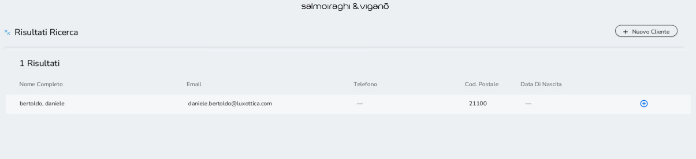
Dopo aver individuato il profilo d'interesse all'interno della lista proposta, cliccare sul nome per accedere alla scheda anagrafica. Il Profilo Cliente riassume tutti i dati relativi al cliente (anagrafici e medici).
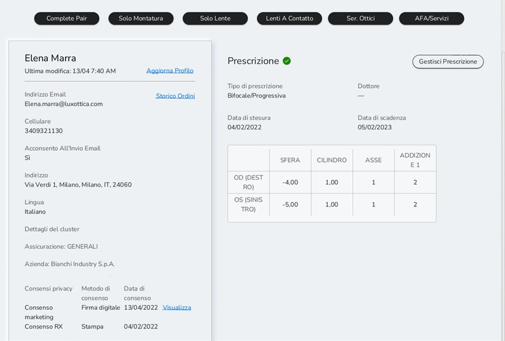
È possibile visionare le metodologie di contatto accordate dal cliente attraverso i consensi privacy nelle voci espresse tra i dati anagrafici del cliente sotto
Acconsento All'invio E-mail e / o Acconsento All'invio di SMS. In alternativa selezionare Visualizza nel box dedicato ai consensi privacy per vedere il documento sottoscritto dal cliente.
Nel caso in cui si volesse modificare e/o visualizzare i flag dei consensi è possibile accedere alla sezione Aggiorna Profilo.
Se la lista proposta non restituisce i risultati desiderati, è possibile creare un nuovo cliente selezionando +Nuovo cliente.
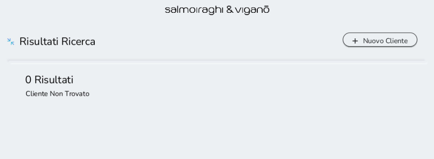
Il passaggio dalla Ricerca Cliente è pensato per evitare la duplicazione di anagrafiche, per cui la creazione di un nuovo cliente può avvenire soltanto dopo averlo ricercato e non averlo trovato.
Inoltre, si consiglia di controllare sempre che sia presente l\'informazione dell\'assicurazione, del codice fiscale e i flag dei consensi per le anagrafiche preesistenti (importate da Acuitas).
Creazione nuovo cliente
Dopo aver cliccato su +Nuovo cliente, inserire le informazioni del cliente nella scheda Aggiungi Cliente:
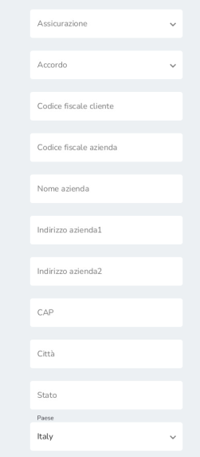
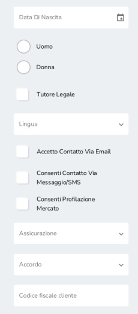
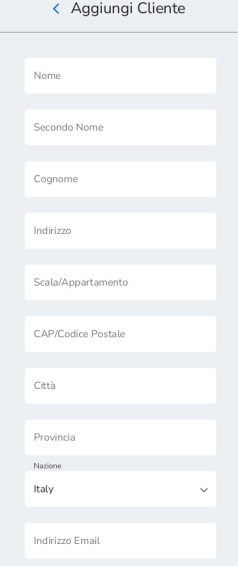
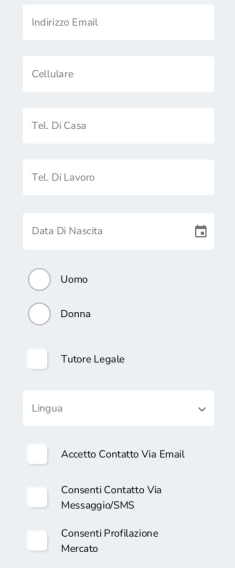
Le informazioni minime obbligatorie per poter creare un profilo cliente sono:
A. Nome + Cognome
B. Indirizzo e-mail (nel caso in cui il cliente non ne disponesse, inserire sempre questo indirizzo e-mail fittizio: fittizio@luxottica.com -- e assicurarsi di raccogliere almeno un contatto alternativo per comunicare con il cliente)
C. Assicurazione (da compilare per tutti i clienti. Nel caso in cui vi fosse un cliente senza assicurazione o con assicurazione non gestita da noi selezionare i campi NO ASSICURAZIONE o ALTRA ASSICURAZIONE)
Si consiglia comunque di aggiungere alle informazioni obbligatorie i dati di:
-
Numero di cellulare
-
Codice fiscale (specialmente per prodotto vista)
-
Residenza (utilizzati per la fattura, se inseriti in anagrafica vengono recuperati automaticamente all'emissione della fattura senza il bisogno di inserirli)
Tra le informazioni è possibile anche inserire il riferimento di un tutore legale. Cliccare su Tutore legale e poi su Continua per accedere alla pagina dove inserire le informazioni richieste per il tutore legale:
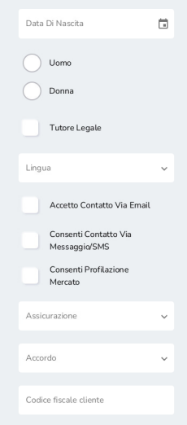
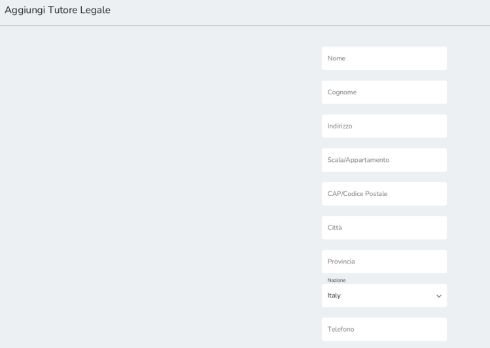
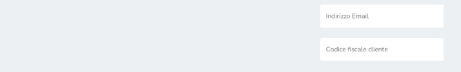
Nel caso in cui venga aggiunto un tutore legale, inserire la mail del tutore legale sia nell'anagrafica del cliente sia in quella del tutore legale, in questo modo la mail di conferma per il trattamento dei dati personali è inviata alla mail del tutore.
Per salvare l'anagrafica cliccare su Aggiungi cliente.
Raccolta consensi marketing
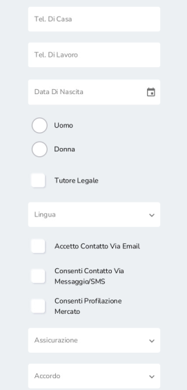
La raccolta dei consensi marketing èsempre richiesta durante la creazione di un nuovo cliente. Inoltre, è necessario raccogliere nuovamente i consensi nel caso di modifica di almeno uno dei flag di profilazione marketing o ricezione di comunicazioni (via e-mail o SMS). Nel caso in cui venisse flaggato il consenso relativo alla ricezione di SMS, anche il numero di telefono diventa un dato obbligatorio da inserire per la creazione del cliente.
A seconda dello strumento utilizzato è possibile raccogliere i consensi attraverso diverse modalità. Cliccare su Più opzioni per visualizzarle tutte.
A. Modalità preferibile - Firma digitale del documento (opzione disponibile solo su iPad). Selezionare Firma qui per accede ad una sezione riportante l'informativa privacy e la casella dove firmare. I consensi sono già precompilati in base a quelli selezionati nella creazione cliente
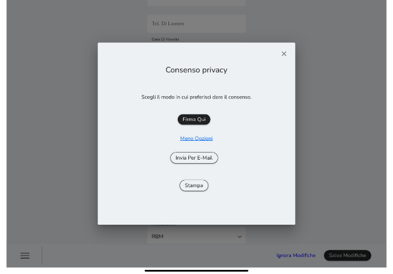
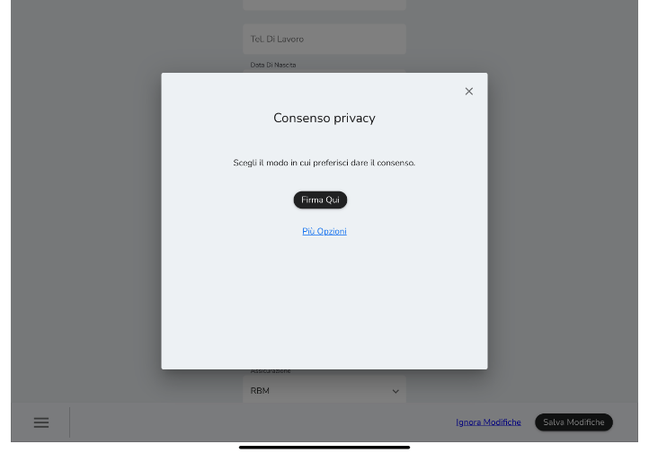
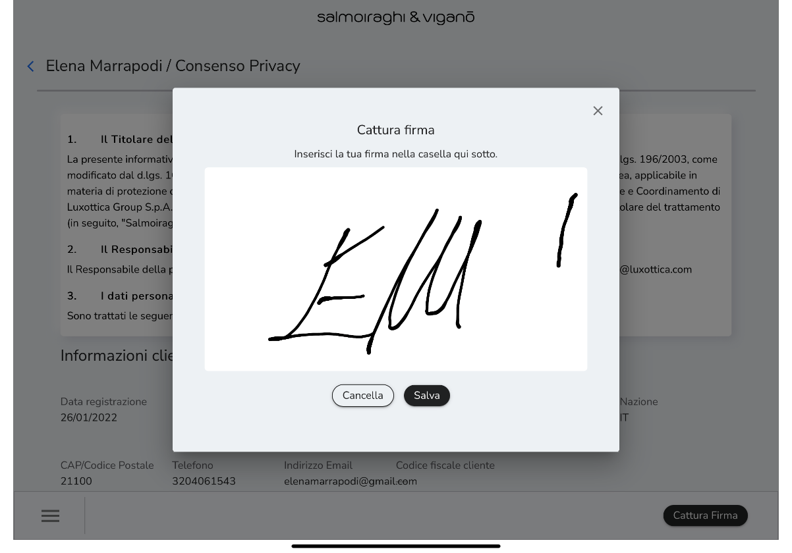
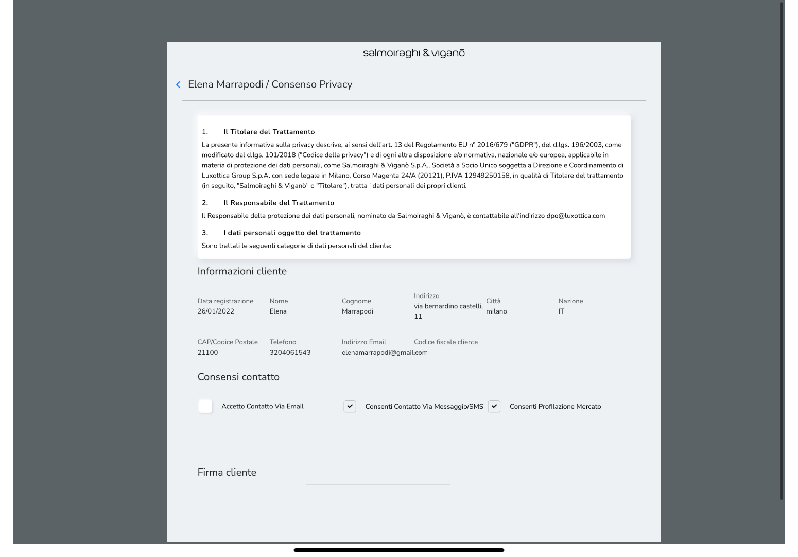
È possibile poi condividere l'informativa privacy con stampa cartacea o e-mail, cliccando rispettivamente su Stampa o su e-mail (il cliente riceve una e-mail con l'informativa privacy firmata in allegato). È inoltre possibile selezionare Salva e Ritorna per salvare l'informativa privacy firmata senza condividerla.
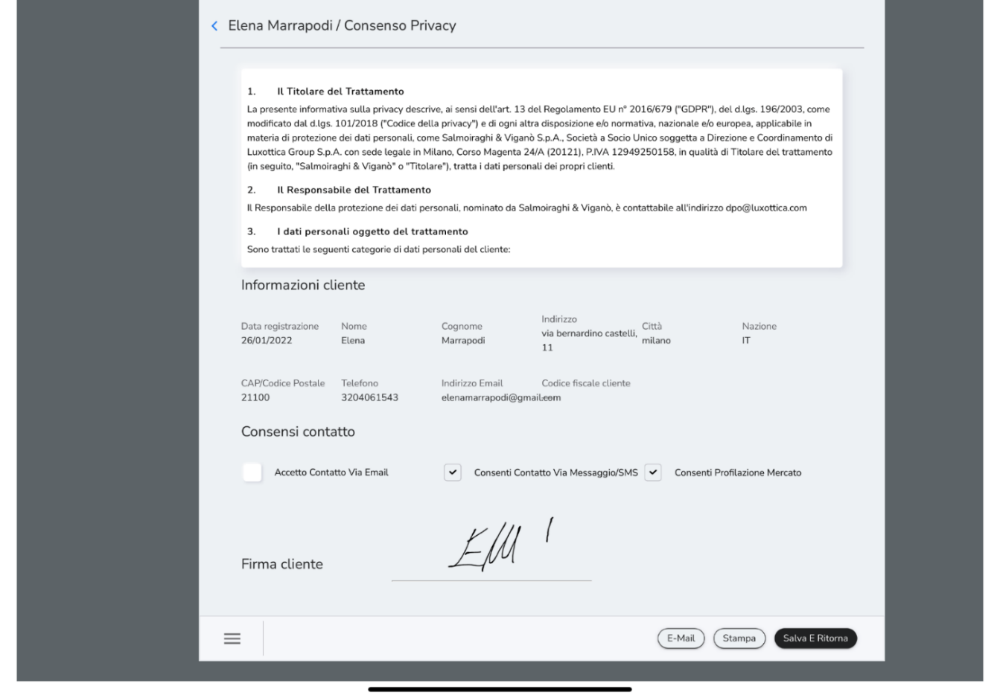
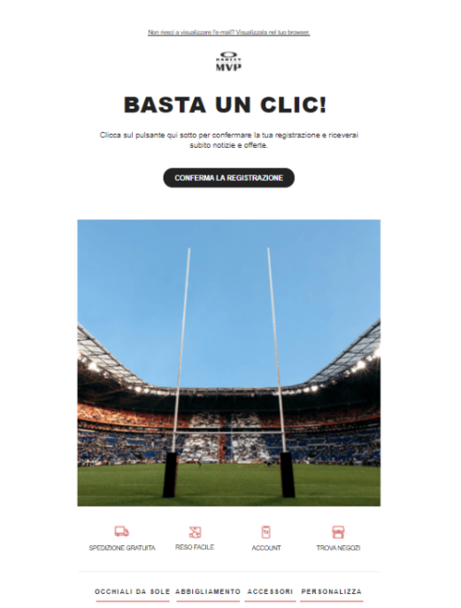
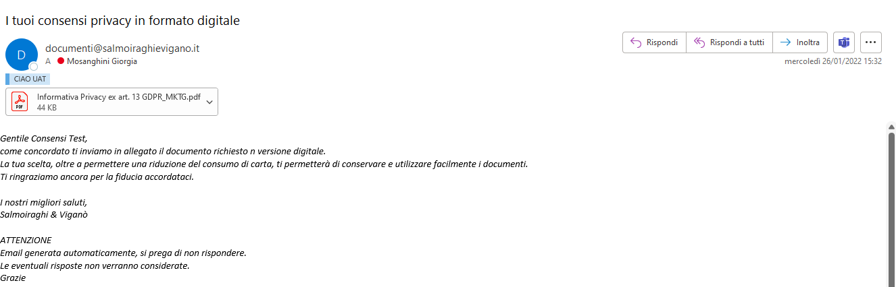
B. Invio di una e-mail al cliente per la presa consenso. All'interno dell'e-mail è presente un tasto che, se selezionato, vale come conferma per i consensi. L'invio avviene dopo l'inserimento di un check up o di un flusso di vendita/ordine. È preferibile assicurarsi che il cliente rilasci il consenso recuperando insieme la mail prima che il cliente esca dallo store.
C. Modalità non preferibile -- Stampa del documento e firma su carta. Nel caso in cui non sia disponibile un iPad e il cliente non abbia un indirizzo e-mail valido, sarà possibile acquisire il consenso tramite firma dell'informativa in formato cartaceo cliccando su Stampa.
Solo in questo ultimo caso è necessario archiviare la copia dell'informativa cartacea firmata dal cliente e conservarla per 10 anni in negozio. Per tutte le altre modalità di raccolta del consenso l'informativa viene salvata all'interno del sistema. È sempre possibile verificare la modalità di raccolta del consenso all'interno del Profilo Cliente.
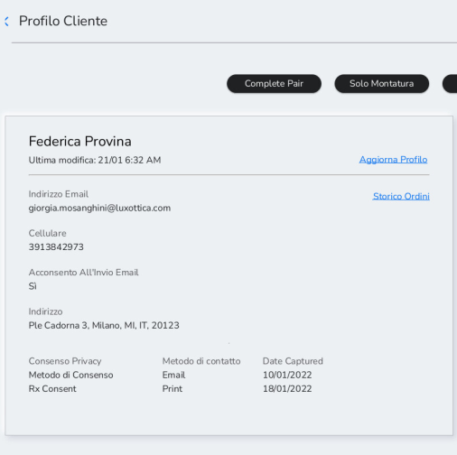